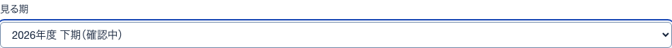
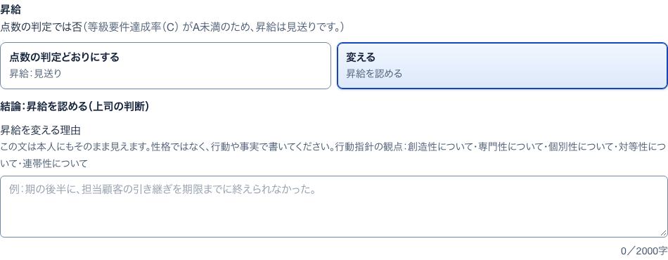
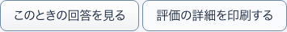
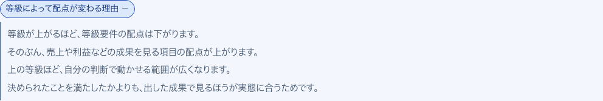

9達成率の分母開いて見る
S39 評価1件 ・ 押すもの: 「達成率の分母について」
中に出るもの
- 分母はこのアンケートで聞いた等級要件の項目数
- 未回答の項目も未達として数える
10仮置き（項目）説明
S39 評価1件 ・ 押すもの: 「仮置き」
中に出るもの
- 制度として未確定のため、叩き台の初期値を入れている
11仮置き（賞与）説明
S39 評価1件 ・ 押すもの: 「仮置き」
中に出るもの
- 配点が未確定のため、金額は仮のもの
16見る期選ぶ一覧
S41 メンバー1人 ・ 押すもの: 「見る期」 ・ 閉じる: Esc

中に出るもの
- 期の名前（確認中の期は「（確認中）」付き）
中で押せるもの
- 期を選ぶ: その期の内訳を出す（→ S41）
12変える理由の欄開いて見る
S39 評価1件 ・ 押すもの: 「変える」 ・ 閉じる: 点数の判定どおりにする

中に出るもの
- 結論：昇給を認める（上司の判断）
- 昇給を変える理由の欄（2000字まで）
- 本人にもそのまま見えるという注意
中で押せるもの
- 点数の判定どおりにする: 理由の欄を閉じて判定どおりに戻す（→ S39）
15並べ替え選ぶ一覧
S40 メンバー ・ 押すもの: 「並べ替え」 ・ 閉じる: Esc
中に出るもの
- 名前
- 役割
- 点数
- 等級
中で押せるもの
- 項目を選ぶ: その項目で並べ直す（→ S40）
13確定の確認確かめる小窓
S39 評価1件 ・ 押すもの: 「確定して本人に公開する」 ・ 閉じる: やめる
中に出るもの
- 佐藤 健太 さんの評価を確定し、本人に公開する
- 昇給と昇格の結論
- あとから「確認中に戻す」で取り消せる
中で押せるもの
- やめる: 何もせず小窓を閉じる（→ S39）
- 確定して本人に公開する: 確定して本人の画面に結果を出す（→ S39）
14印刷小窓
S39 評価1件 ・ 押すもの: 「評価の詳細を印刷する」 ・ 閉じる: キャンセル

中に出るもの
- 端末の印刷の画面
- ボタンと確認の欄は印刷に出ない
中で押せるもの
- キャンセル: 印刷せずに閉じる（→ S39）
17配点が変わる理由開いて見る
S42 評価の基準 ・ 押すもの: 「等級によって配点が変わる理由」

中に出るもの
- 等級が上がるほど等級要件の配点は下がる
- そのぶん成果を見る項目の配点が上がる
- 上の等級ほど自分で動かせる範囲が広い
- 出した成果で見るほうが実態に合う